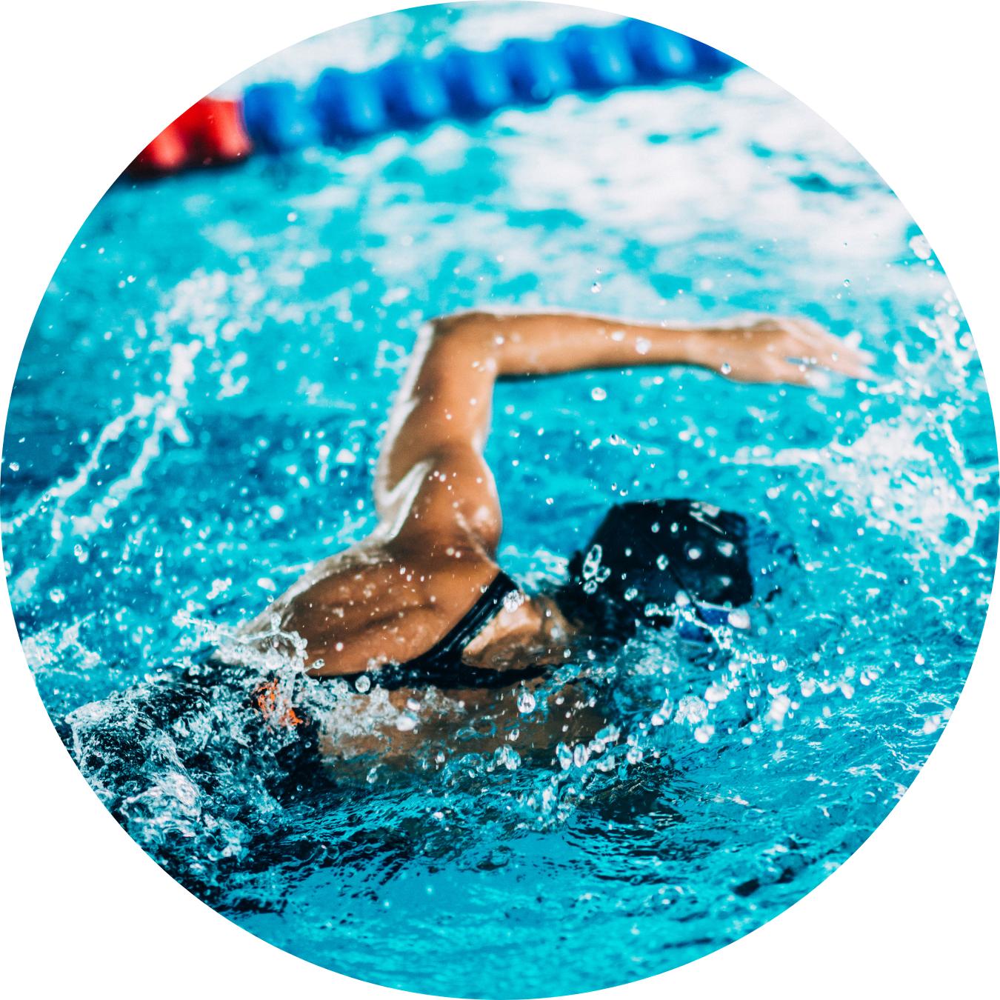

NADO CRAWL OU NADO LIVRE:

O nado crawl é a modalidade mais popular e praticada na natação.
Nesse estilo, os nadadores se movem alternando os movimentos dos braços, mantendo o corpo em posição horizontal.
O rosto permanece na água, exceto quando é necessário respirar. Os nadadores fazem um movimento contínuo de pernas
conhecido como "chute de crawl" enquanto os braços realizam uma puxada alternada, proporcionando sustentação e propulsão na água.